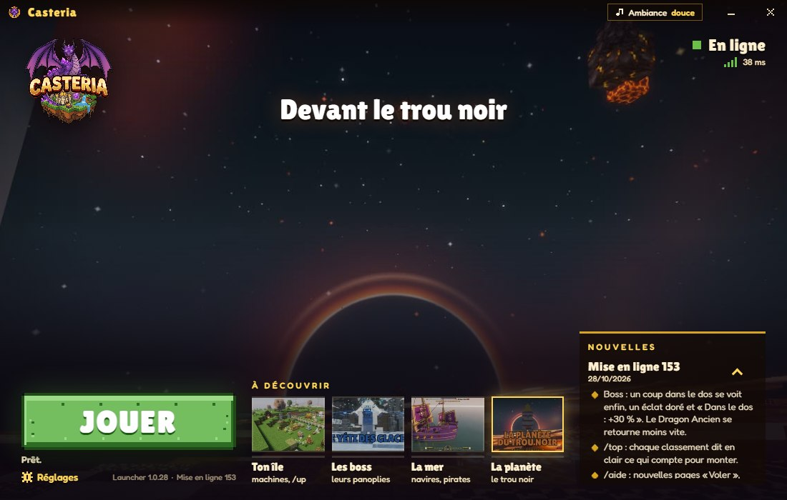

Katana en castérium
Clic droit : tu fonces de 6 blocs, en frappant chaque monstre sur ta route.

Minecraft 1.21.1 · NeoForge
Sur Casteria, les armes, les machines, tes bêtes et les boss ont été créés pour le serveur. Et tu n'as aucun mod à chercher : le launcher installe le jeu, NeoForge et tous les mods à ta place.
Crack accepté : joue sans acheter Minecraft
Gratuit · Windows, Mac et Linux · en français
Ici, le contenu du jeu a été fait pour le serveur : les boss, la mer et ses navires, les familiers, les montures, les bêtes, les machines et jusqu'aux écrans ont été dessinés et codés pour Casteria. En voici trois familles d'objets.
Clic droit : tu fonces de 6 blocs, en frappant chaque monstre sur ta route.

Elle part, frappe et revient dans ta main ; Tranchant la renforce aussi au lancer.

Une arme de boss : trois coups en 4 secondes sur une même créature la font exploser.
Chaque arme a son combo : tiens le clic, elle enchaîne ses coups. Les grandes se tiennent à deux mains ; une épée te laisse ton bouclier.

Un clic droit sur une plante mûre : elle la récolte et la replante.

Il plante et récolte tout seul ; un coffre collé reçoit la récolte.

Dans un incubateur, il éclot en une bête commune, rare... ou mythique, qui entre dans ton bestiaire.
Quatre enclos par île, et deux gains par enclos : les objets de tes bêtes dans son coffre, les jetons de sa grange.

Ta première machine : la pierre de l'île, sans fin. Deux t'attendent à l'arrivée.

Elle fond l'or brut au charbon : charbon en main, un clic droit fait le plein.

Il vend au marché ce que contient son coffre, toutes les 5 minutes, même quand tu es absent.
Les machines s'achètent en jetons au /catalogue, chacune à son niveau, jusqu'à celles du castérium.
Et ce n'est qu'un début : des familiers te suivent partout, des montures t'emmènent au sol, dans les airs ou dans l'eau, et cinq navires se pilotent pour de bon, de la Chaloupe au Vaisseau amiral.
Ici, ta survie suit une route. Tout rapporte de l'expérience, tes ventes, tes récoltes, tes quêtes, les jeux, les donjons et les boss, et chaque niveau ouvre quelque chose : un outil, une machine, un bonus ou un boss. Huit rangs s'affichent devant ton nom, de Naufragé à Légende.
Au sommet, le castérium, un métal que le marché ne vend pas : il se forge du Réacteur à la Forge de Casteria et donne un équipement plus fort que la Netherite. Ludovic, lui, tient 130 quêtes en 10 chapitres (/qp). Tout le chemin est sur la page de la progression façon RPG.

Pas de pack à télécharger, pas de version à régler, pas de dossier mods à remplir : le launcher de Casteria s'en charge.

Chaque étape, système par système, et les réponses aux soucis d'installation : le launcher Minecraft moddé de Casteria. Les mêmes fichiers sont aussi sur la page de téléchargement de l'accueil.
Ce qu'il faut pour jouer à ce serveur moddé, tel que le launcher le demande.
Un PC sous Windows 10 ou 11, en 64 bits. Le launcher s'installe tout seul, sans rien te demander.
macOS 13 ou plus récent, avec une puce Apple (M1, M2, M3...) ou un processeur Intel : chacun a son fichier.
Un PC 64 bits sous Ubuntu 24.04, Linux Mint 22, Debian 13, Fedora 40, Arch ou Manjaro, ou plus récent. Sur un Linux plus ancien, le jeu ne peut pas démarrer.
4 Go sur ton ordinateur suffisent, 8 Go sont conseillés. Le launcher la règle tout seul : 2 Go pour le jeu, 3 Go dès 8 Go de mémoire, 4 Go dès 12 Go. Dans Réglages, tu choisis de 2 à 16 Go, en laissant toujours 2 Go à ton système.
Ceux de Minecraft suffisent : un processeur Intel Core i3 ou AMD A8 au moins, une puce graphique Intel HD 4000, GeForce 400 ou Radeon HD 7000, ou mieux. Les shaders, coupés au départ, demandent une vraie carte graphique.
Environ 2 Go libres : le jeu, ses mods et Java tiennent dans 1,9 Go. Une connexion pour jouer ; la première fois, le launcher télécharge tout en quelques minutes.
Les questions qu'on nous pose avant d'installer.
Non. Le launcher installe le jeu, NeoForge et tous les mods de Casteria, puis les met à jour tout seul : aucun fichier à déplacer, aucune version à régler.
Oui. Tout le jeu se joue sans payer ; la boutique vend des crédits, que tu peux aussi gagner avec les missions du jour, tes votes et les quêtes de Ludovic.
Non : le crack est accepté. Ton pseudo suffit, et si tu as acheté Minecraft, tu joues pareil, avec le même launcher.
Non : Casteria se joue seulement avec les siens, et le launcher retire tout seul un mod en trop. Les shaders, eux, s'allument d'un clic dans Réglages.
Minecraft Java 1.21.1, avec NeoForge 21.1. Tu n'as rien à installer toi-même : le launcher s'en charge.
Oui : le launcher existe pour Windows, pour Mac (puce Apple ou Intel) et pour Linux, avec son aide pour chacun.
Un clic sur JOUER : le launcher prépare le jeu et ses mods, puis t'emmène au palais.